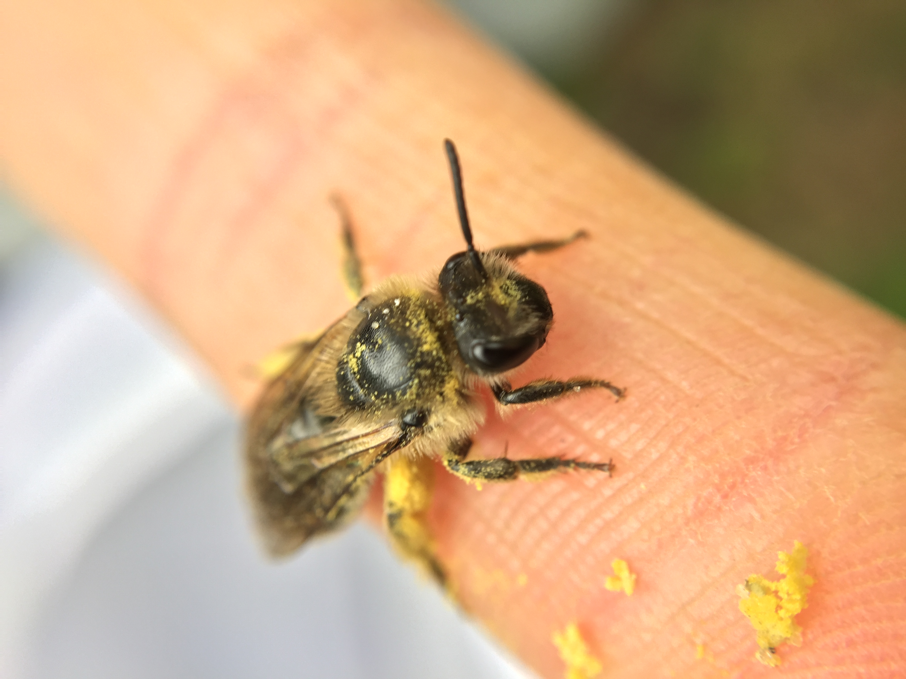
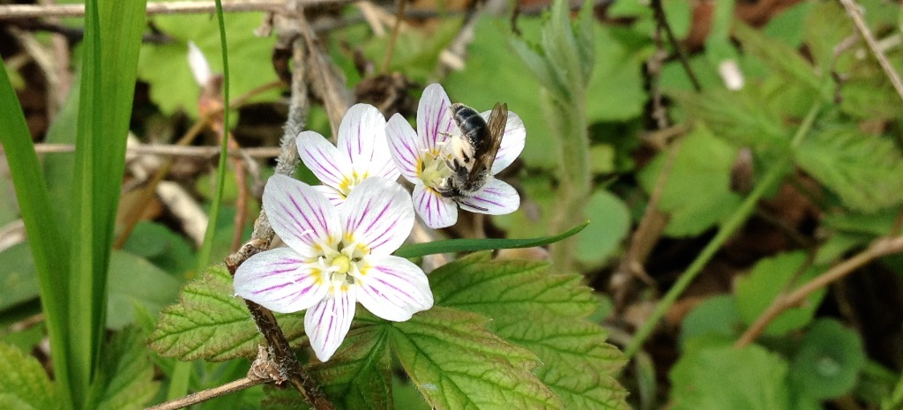

Two interactive dashboards — pick one to explore.

Field site map, body weight comparisons, and a conservation prioritization tool from my PhD thesis research on honeybee effects on native cavity-nesting bees in Ontario.
Open dashboard →
Explore public GBIF occurrence data for 80 native bee species across Ontario — click anywhere on the map to see species recorded nearby, or browse individual species range maps.
Open dashboard →